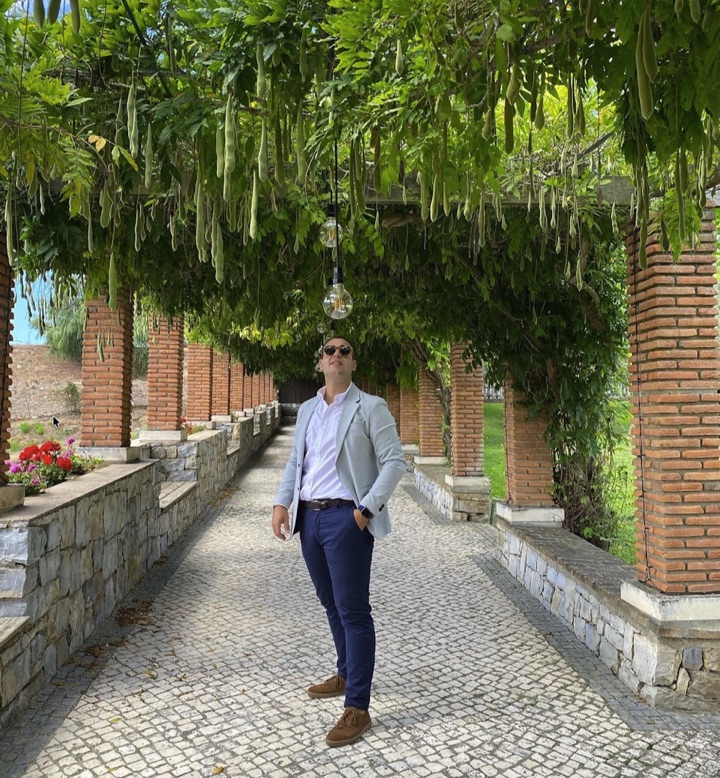
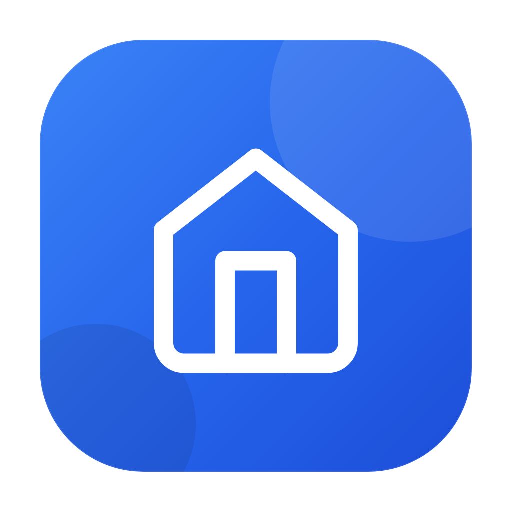
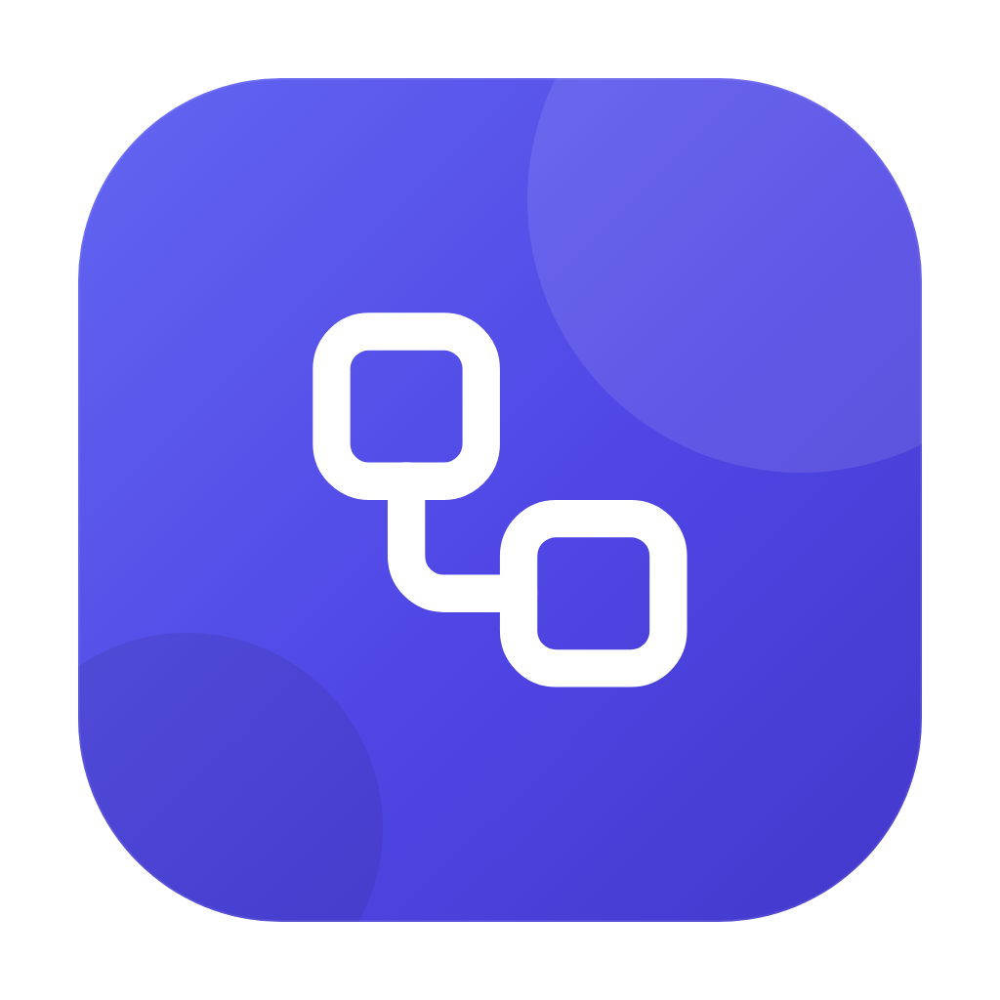
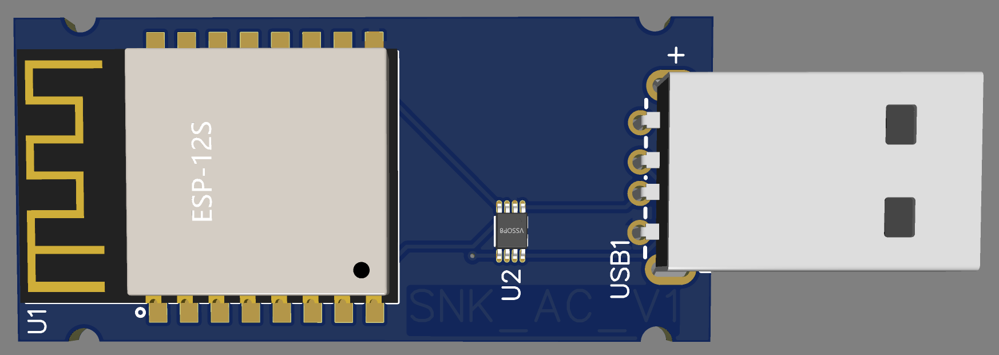
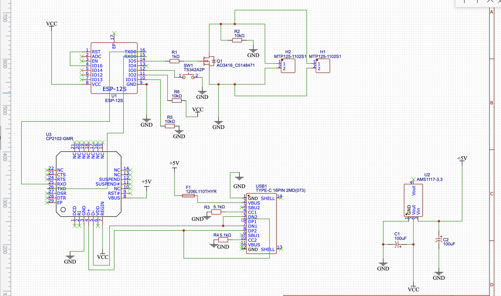
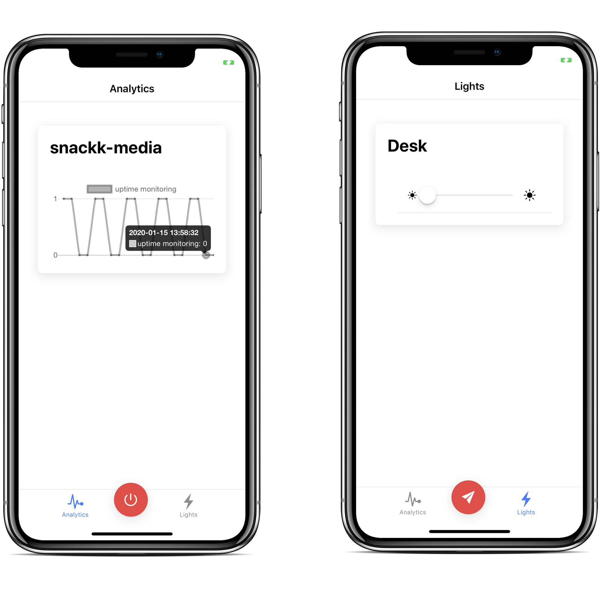

MSc in Distributed Systems & Security from Instituto Superior Técnico. Outside of client work I design and ship my own web apps, IoT devices and homelab infrastructure — currently based in Lisbon, Portugal.

👋 Hey! I'm Diogo Santos, born and raised in Marinha Grande, Portugal, and now based in Lisbon.
I currently work at Polarising as a Software Engineer, collaborating with Vesper Streaming on large-scale video distribution platforms serving over a million concurrent users.
I'm passionate about building innovative and enjoyable projects — from full-stack web apps to embedded IoT devices and self-hosted infrastructure. Outside of work, you'll find me skateboarding, reading, gardening, hanging out with friends, or diving into a good sci-fi series.
Vesper Streaming — B2B/B2C video & sports data distribution, supporting 1M+ concurrent users.
Vesper Streaming — Worked across the Migration team (built the onboarding microservice importing customers/purchases), the Payments/Licence team (payment & access checks), and currently the Ads team, integrating an Ad Stitcher (YoSpace/MediaTailor) into live streams.
Stack: Java 11, Dropwizard, AWS (MediaTailor, EC2, ECS, ECR, SQS, SES, S3, Aurora, DynamoDB, Lambda), JUnit, JDBI, Flyway, Maven, Python.
PORTA — Polarising framework exposing datasources as WSDL/REST contracts via a friendly UI. Full-stack developer.
Stack: Spring, Java 8, Angular 2+, Docker.
WeWin — Android/iOS app for joint or single EuroMillions bets. Full-stack developer.
Stack: Spring, Liquibase, MySQL, Docker, Jenkins, Angular 2+, Java 8.
Developed a cross-platform mobile app for Android, iOS and Windows Phone using KendoUI.
MSc, Computer Science and Engineering — Distributed Systems & Security.
BSc, Computer Science and Engineering.
A selection of independent projects from the last few years — web apps, IoT devices and self-hosted infrastructure. All open-source on GitHub ↗.

Web / SaaS Live
Web / SaaS Live
IoT / EmbeddedA modern, dark-themed web dashboard to control a Midea-based Bosch Climate 3000i air conditioner over UART, running on an ESP8266 with OTA updates and a live WebSocket console.

IoT / EmbeddedA custom ESP8266 IoT device — own PCB design — to remotely wake and manage a connected computer over WiFi/MQTT, with captive-portal WiFi setup and a web dashboard.

IoT / MobileAn Ionic-based iOS/Android home-automation dashboard, controlling ESP8266-powered lights and devices over MQTT, plus a wake-on-LAN trigger and live analytics.
A self-hosted media stack orchestrated with Docker Compose — Traefik, Portainer, Emby, Radarr, Sonarr, Jackett and Jenkins — all behind automatic HTTPS via Let's Encrypt.
Yet another URL shortener — a small, focused Java & Spring Boot REST API for creating short links and redirecting to the original URL, built as a backend playground.
A steganography tool that conceals arbitrary data inside images using the Least Significant Bit (LSB) algorithm across RGB channels — invisible to the human eye.
Whether it's a project idea, a job opportunity, or just to talk tech — my inbox is always open.